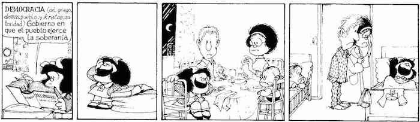

Esta aplicación es de código abierto y no registra tus votos ni almacena información personal.
Idea original y desarrollo por @scoffey. Datos liberados por @andy_tow. Ver más créditos.
Seleccioná tu distrito:

¿Querés ayudar a un amigo que no sabe qué votar?
¡Sos libre de hacer Patria y compartirle este link!
Facebook - Twitter - Google+
Seleccioná una lista de candidatos a por
Así votaron los candidatos a diputados y senadores que elegiste.
Sólo se encuentran los candidatos elegidos que participaron de la votación de los proyectos de ley seleccionados, tratados en el Congreso Nacional entre 2006 y 2013.
Lamentablemente no tenemos datos de los candidatos que elegiste. Puede ser que no hayan ocupado banca en el Congreso Nacional entre 2006 y 2013 o que no hayan participado de las votaciones de los 32 proyectos que seleccionamos.
¿Querés ayudar a un amigo que no sabe qué votar?
¡Sos libre de hacer Patria y compartirle este link!
Facebook - Twitter - Google+
¿Querés ver más aplicaciones como esta?
¡Pedile a tus candidatos en campaña que se debatan proyectos como la
Ley de Transparencia, Gobierno Abierto y Acceso a la Información Pública!
(En 2012 este proyecto perdió estado parlamentario.)
Contactalos por e-mail, Twitter u otros medios a ver si te responden.